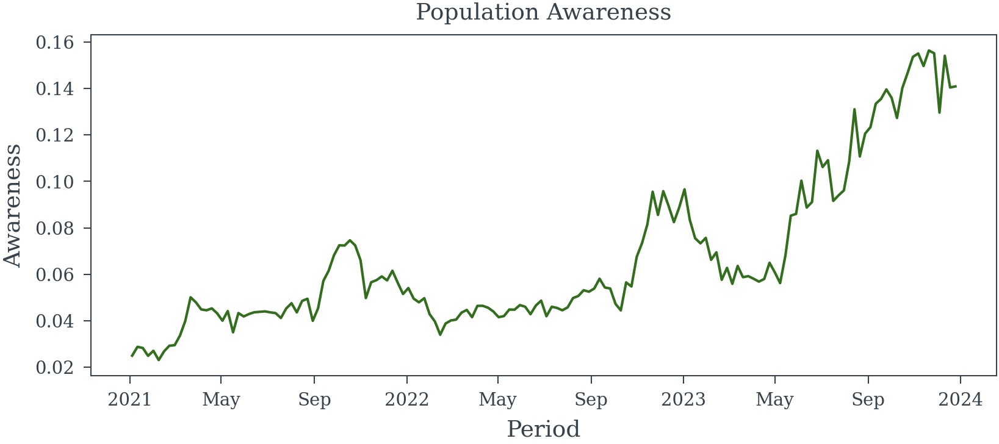
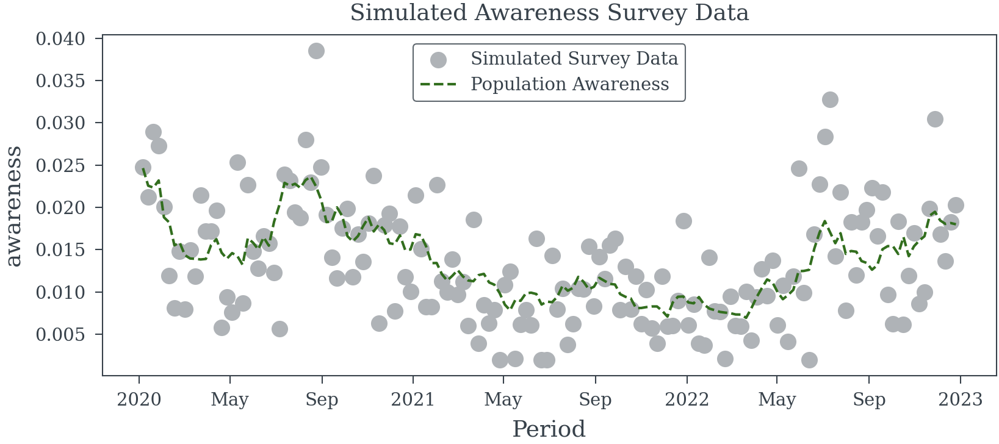
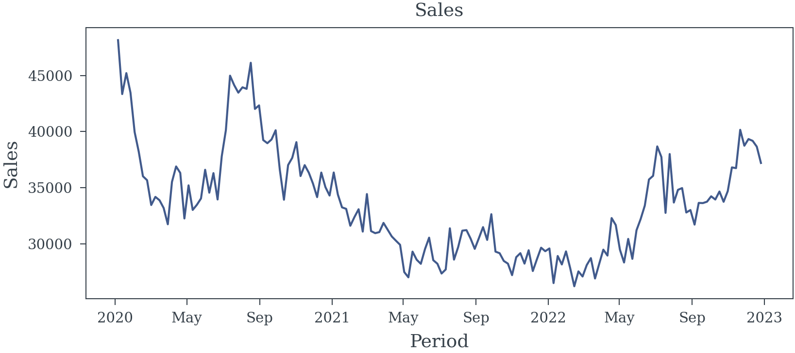
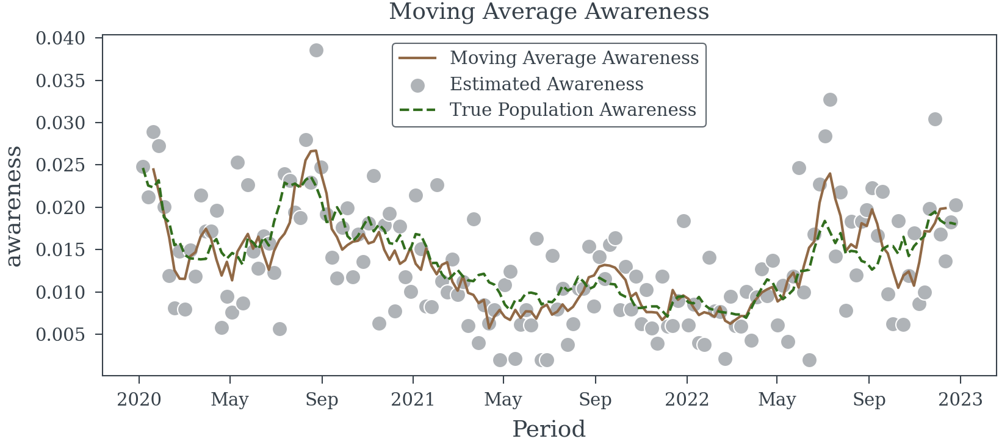
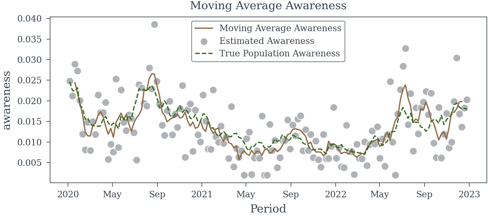
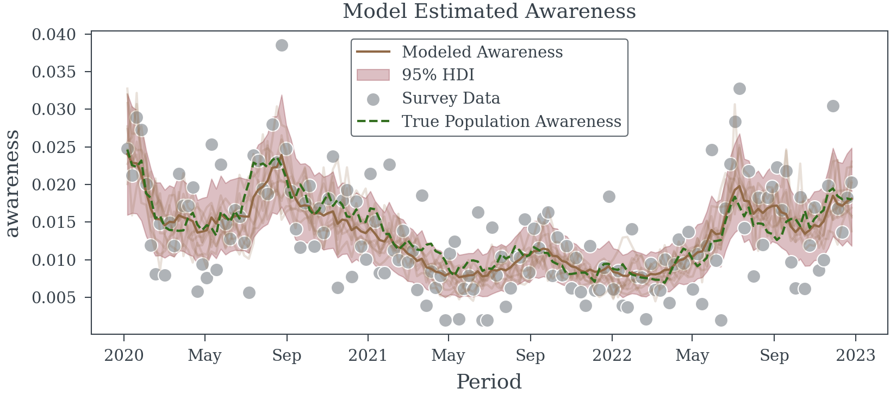

dates = pd.date_range(start='2021-01-01', periods=156, freq='W-MON')
awareness_model = random_walk_awareness_model(dates)
starting_awareness = 0.025
logit_starting_awareness = np.log(starting_awareness/(1-starting_awareness))
generative_model = pm.do(
awareness_model,
{
'weekly_variation': .1,
'initial_awareness': logit_starting_awareness,
'weekly_shock': .01
}
)
population_awareness = pm.draw(generative_model['awareness'], random_seed=23)
population_awareness = xr.DataArray(
population_awareness,
dims=['Period'],
coords={'Period': dates}
)Sampling Error in Exogenous Variables
How to account for the observation process
Error in exogenous variables—those not influenced by other variables in a model—can significantly compromise the integrity of regression analyses. When these variables are inaccurately measured and the errors are not properly addressed, several issues may arise:
- Attenuation Bias: This occurs when sampling errors lead to biased and inconsistent parameter estimates, typically causing the estimated coefficients to be closer to zero than their true values (Bound, Brown, and Mathiowetz 2001).
- Reduced Statistical Power: Sampling errors increase the variance of estimators, making it more challenging to detect significant relationships between variables.
- Misleading Inferences: Ignoring sampling errors can result in incorrect conclusions about the relationships between variables, potentially leading to flawed policy decisions or interpretations (Bound, Brown, and Mathiowetz 2001).
This website is dedicated to exploring the challenges posed by sampling errors in exogenous variables within regression models. We provide comprehensive insights into how these errors can distort results and discuss effective strategies to mitigate their impact.
By understanding and addressing sampling errors in exogenous variables, data scientists can enhance the validity and reliability of their regression analyses.
Survey Data
When analyzing survey data, it’s crucial to assess the precision of population parameter estimates. This precision is influenced by factors such as sample size, sampling design, and measurement error within the survey data.
Impact of Sampling Error on Regression Models
Incorporating imprecise measurements into regression models can lead to biased and inconsistent coefficient estimates. This issue persists even with unbiased sampling designs and accurate respondent answers. In survey research, where sample sizes are often limited and sampling designs complex, measurement errors can significantly affect the precision of population parameter estimates.
Example 1 (Sampling Error in a Binary Outcome Variable) Consider a weekly survey involving approximately 500 participants, selected randomly to represent the general population. Participants are asked if they recall seeing a specific brand’s advertisement, with data collected via phone and online methods.
Assuming perfect recall accuracy, we aim to estimate the effect of advertisement recall on the brand’s sales using a simple linear regression model. To explore this, we can simulate three years of survey data to analyze the relationship between advertisement recall and sales.
Helper Functions
random_walk_awareness_model
random_walk_awareness_model (periods:list|pandas.core.indexes.datetimes. DatetimeIndex|numpy.ndarray)
| Type | Details | |
|---|---|---|
| periods | list | pandas.core.indexes.datetimes.DatetimeIndex | numpy.ndarray | Time periods to simulate |
| Returns | Model | PyMC model for the random walk awareness model |

survey_obs_model
survey_obs_model (population_awareness:xarray.core.dataarray.DataArray|py tensor.tensor.variable.TensorVariable, avg_weekly_participants:float=500.0, coords:dict=None, model:pymc.model.core.Model=None)
| Type | Default | Details | |
|---|---|---|---|
| population_awareness | xarray.core.dataarray.DataArray | pytensor.tensor.variable.TensorVariable | Population awareness | |
| avg_weekly_participants | float | 500.0 | Average number of participants per week |
| coords | dict | None | Coordinates for the PyMC model |
| model | Model | None | PyMC model to add the survey observation model |
| Returns | Model |
simulate_awareness_survey_data
simulate_awareness_survey_data (start_date:str='2020-01-01', n_weeks:int=156, avg_weekly_participants:float=500.0, weekly_awareness_variation:float=0.08, starting_population_aware:float=0.025, weekly_shock:float=0.01, random_seed:int=42)
| Type | Default | Details | |
|---|---|---|---|
| start_date | str | 2020-01-01 | Start date of the survey data |
| n_weeks | int | 156 | Number of weeks to simulate |
| avg_weekly_participants | float | 500.0 | Average number of participants per week |
| weekly_awareness_variation | float | 0.08 | Std. dev. of gaussian inovations for weekly awareness |
| starting_population_aware | float | 0.025 | Starting population awareness |
| weekly_shock | float | 0.01 | Std. dev. of gaussian noise for weekly deviation from random walk |
| random_seed | int | 42 | Random seed for reproducibility |
| Returns | Dataset | Simulated awareness survey data as an xarray dataset |
plot_survey_sim_data
plot_survey_sim_data (data:xarray.core.dataset.Dataset)
| Type | Details | |
|---|---|---|
| data | Dataset | Simulated survey data must contain ‘awareness’ and ‘estimated_awareness’ variables |
| Returns | None | Plot of the simulated survey data |
Simulation Approach
- Data Generation: Create a dataset representing weekly survey responses over three years, including variables for advertisement recall (binary) and corresponding sales figures.
- Model Specification: Define a linear regression model with sales as the dependent variable and advertisement recall as the independent variable.
- Analysis: Fit the model to the simulated data to assess the estimated effect of advertisement recall on sales.
Generate Survey Responses
trace = simulate_awareness_survey_data(random_seed=23)
plot_survey_sim_data(trace)Sampling: [_noise, logit_awareness, n_positive, n_survey_participants]

Generate Sales Data
The sales data is simulated using the following equation:
\[ \begin{align*} log(S_t) &= \beta \text{pop\_awareness}_t + \alpha + \varepsilon_t \\ \varepsilon_t &\sim \mathcal{N}(0, \sigma^2) \end{align*} \tag{1}\]
Lets see if the true coeff \(\beta\) can be estimated using the simulated data.
ACTUAL_AWARENESS_COEFF = 30
log_sales = trace.awareness*ACTUAL_AWARENESS_COEFF + 10 + np.random.normal(0, 0.03, trace.awareness.shape)
sales = np.exp(log_sales)

The naive model
Let’s try ignoring the data generation process and fit a simple linear regression model to the data.
| Dep. Variable: | awareness | R-squared: | 0.416 |
| Model: | OLS | Adj. R-squared: | 0.413 |
| Method: | Least Squares | F-statistic: | 89.24 |
| Date: | Fri, 17 Jan 2025 | Prob (F-statistic): | 5.44e-17 |
| Time: | 03:12:36 | Log-Likelihood: | 131.73 |
| No. Observations: | 156 | AIC: | -259.5 |
| Df Residuals: | 154 | BIC: | -253.4 |
| Df Model: | 1 | ||
| Covariance Type: | HAC |
| coef | std err | z | P>|z| | [0.025 | 0.975] | |
| const | 10.2451 | 0.019 | 540.755 | 0.000 | 10.208 | 10.282 |
| estimated_awareness | 12.5093 | 1.324 | 9.446 | 0.000 | 9.914 | 15.105 |
| Omnibus: | 4.668 | Durbin-Watson: | 1.021 |
| Prob(Omnibus): | 0.097 | Jarque-Bera (JB): | 3.383 |
| Skew: | 0.219 | Prob(JB): | 0.184 |
| Kurtosis: | 2.427 | Cond. No. | 142. |
Notes:
[1] Standard Errors are heteroscedasticity and autocorrelation robust (HAC) using 1 lags and without small sample correction
We can see from the results in Table 1 that the estimated coefficient is biased. The true coefficient for the effect of the populations ability to recall the brand’s advertisement on the brand’s sales is 30. The estimated coefficient is much less.
Next the simple moving average model
Let’s try a simple moving average model to see if we can improve the estimate of the coefficient. We will ignore the data generation process and take the moving average of the estimated awareness directly.

| Dep. Variable: | awareness | R-squared: | 0.733 |
| Model: | OLS | Adj. R-squared: | 0.731 |
| Method: | Least Squares | F-statistic: | 263.4 |
| Date: | Fri, 17 Jan 2025 | Prob (F-statistic): | 7.67e-35 |
| Time: | 03:12:39 | Log-Likelihood: | 192.63 |
| No. Observations: | 152 | AIC: | -381.3 |
| Df Residuals: | 150 | BIC: | -375.2 |
| Df Model: | 1 | ||
| Covariance Type: | HAC |
| coef | std err | z | P>|z| | [0.025 | 0.975] | |
| const | 10.0966 | 0.017 | 580.819 | 0.000 | 10.063 | 10.131 |
| estimated_awareness | 23.5746 | 1.452 | 16.231 | 0.000 | 20.728 | 26.421 |
| Omnibus: | 1.668 | Durbin-Watson: | 0.903 |
| Prob(Omnibus): | 0.434 | Jarque-Bera (JB): | 1.307 |
| Skew: | 0.058 | Prob(JB): | 0.520 |
| Kurtosis: | 3.439 | Cond. No. | 209. |
Notes:
[1] Standard Errors are heteroscedasticity and autocorrelation robust (HAC) using 1 lags and without small sample correction
We can see from Table 2 that we are doing better than the naive model. The estimated coefficient is closer to the true coefficient. However, the estimated coefficient is still biased.
Moving Average (Correctly this time)
Let’s try a moving average model again, but this time we will take the moving average of the number of survey participants and the number of positive results before dividing each.
moving_sum_n_positive = trace.n_positive.rolling(Period=5).sum().shift(Period=-2)
moving_sum_n_participants = trace.n_survey_participants.rolling(Period=5).sum().shift(Period=-2)
moving_avg_awareness = moving_sum_n_positive/moving_sum_n_participants

| Dep. Variable: | awareness | R-squared: | 0.732 |
| Model: | OLS | Adj. R-squared: | 0.730 |
| Method: | Least Squares | F-statistic: | 166.6 |
| Date: | Fri, 17 Jan 2025 | Prob (F-statistic): | 4.18e-26 |
| Time: | 03:12:43 | Log-Likelihood: | 192.21 |
| No. Observations: | 152 | AIC: | -380.4 |
| Df Residuals: | 150 | BIC: | -374.4 |
| Df Model: | 1 | ||
| Covariance Type: | HAC |
| coef | std err | z | P>|z| | [0.025 | 0.975] | |
| const | 10.0953 | 0.022 | 463.446 | 0.000 | 10.053 | 10.138 |
| Moving Avg Awareness | 23.7208 | 1.838 | 12.907 | 0.000 | 20.119 | 27.323 |
| Omnibus: | 2.137 | Durbin-Watson: | 0.897 |
| Prob(Omnibus): | 0.344 | Jarque-Bera (JB): | 1.827 |
| Skew: | 0.098 | Prob(JB): | 0.401 |
| Kurtosis: | 3.500 | Cond. No. | 210. |
Notes:
[1] Standard Errors are heteroscedasticity and autocorrelation robust (HAC) using 5 lags and without small sample correction
This model (Table 3) is only slightly better than the simple moving average model. The estimated coefficient is still biased.
Latent Variable Model
Let us now try to first estimate the population level awareness using a bayesian model and then use the estimated population level awareness in the regression model.
dates = trace["Period"].values
awareness_model = random_walk_awareness_model(dates)
with awareness_model as survey_model:
survey_obs_model(awareness_model['awareness'], avg_weekly_participants=500, coords={'Period': dates})
with pm.observe(
pm.do(
survey_model,
{'n_survey_participants': trace.n_survey_participants.values} # apply the number of survey participants
),
{'n_positive': trace.n_positive.values} # observe the number of positive responses
):
obs_trace = pm.sample(nuts_sampler='nutpie', random_seed=42)

| Dep. Variable: | awareness | R-squared: | 0.845 |
| Model: | OLS | Adj. R-squared: | 0.844 |
| Method: | Least Squares | F-statistic: | 366.1 |
| Date: | Fri, 17 Jan 2025 | Prob (F-statistic): | 1.51e-42 |
| Time: | 03:12:57 | Log-Likelihood: | 235.25 |
| No. Observations: | 156 | AIC: | -466.5 |
| Df Residuals: | 154 | BIC: | -460.4 |
| Df Model: | 1 | ||
| Covariance Type: | HAC |
| coef | std err | z | P>|z| | [0.025 | 0.975] | |
| const | 10.0118 | 0.019 | 533.362 | 0.000 | 9.975 | 10.049 |
| awareness | 29.9679 | 1.566 | 19.135 | 0.000 | 26.898 | 33.037 |
| Omnibus: | 2.650 | Durbin-Watson: | 1.050 |
| Prob(Omnibus): | 0.266 | Jarque-Bera (JB): | 2.187 |
| Skew: | -0.261 | Prob(JB): | 0.335 |
| Kurtosis: | 3.252 | Cond. No. | 239. |
Notes:
[1] Standard Errors are heteroscedasticity and autocorrelation robust (HAC) using 5 lags and without small sample correction
Compared to the previous models the Latent Variable Model is much better at recovering the ground truth. While the estimated coefficient is still biased (we haven’t removed all the measurement error), it is much closer to the true coefficient, than the previous models. Given that the model can be train quickly on the data and the estimated coefficient is much closer to the true coefficient, using the latent model is a good choice.
Using the true awareness
Finally, let’s see how well we can do if we use the true awareness in the regression model. This is not likely to be possible in practice, but it should provide a good comparison point.
| Dep. Variable: | awareness | R-squared: | 0.957 |
| Model: | OLS | Adj. R-squared: | 0.957 |
| Method: | Least Squares | F-statistic: | 4545. |
| Date: | Fri, 17 Jan 2025 | Prob (F-statistic): | 3.24e-116 |
| Time: | 03:13:00 | Log-Likelihood: | 335.30 |
| No. Observations: | 156 | AIC: | -666.6 |
| Df Residuals: | 154 | BIC: | -660.5 |
| Df Model: | 1 | ||
| Covariance Type: | HAC |
| coef | std err | z | P>|z| | [0.025 | 0.975] | |
| const | 9.9905 | 0.007 | 1465.262 | 0.000 | 9.977 | 10.004 |
| awareness | 30.7167 | 0.456 | 67.415 | 0.000 | 29.824 | 31.610 |
| Omnibus: | 0.434 | Durbin-Watson: | 2.231 |
| Prob(Omnibus): | 0.805 | Jarque-Bera (JB): | 0.372 |
| Skew: | -0.119 | Prob(JB): | 0.830 |
| Kurtosis: | 2.973 | Cond. No. | 231. |
Notes:
[1] Standard Errors are heteroscedasticity and autocorrelation robust (HAC) using 5 lags and without small sample correction
Here we see that not only is the estimate spot on, but the standard error is also much lower than the other models. The better the measure of the exogenous variable, the more precise the estimate of the coefficient we can achieve.
References
Bound, John, Charles Brown, and Nancy Mathiowetz. 2001. “Measurement Error in Survey Data.” In Handbook of Econometrics, 3705–3843. https://doi.org/10.1016/s1573-4412(01)05012-7.
Reuse
Citation
BibTeX citation:
@online{reda,
author = {Reda, Matthew},
title = {Sampling {Error} in {Exogenous} {Variables}},
url = {https://redam94.github.io/common_regression_issues/sampling_error.html},
langid = {en}
}
For attribution, please cite this work as:
Reda, Matthew. n.d. “Sampling Error in Exogenous
Variables.” https://redam94.github.io/common_regression_issues/sampling_error.html.